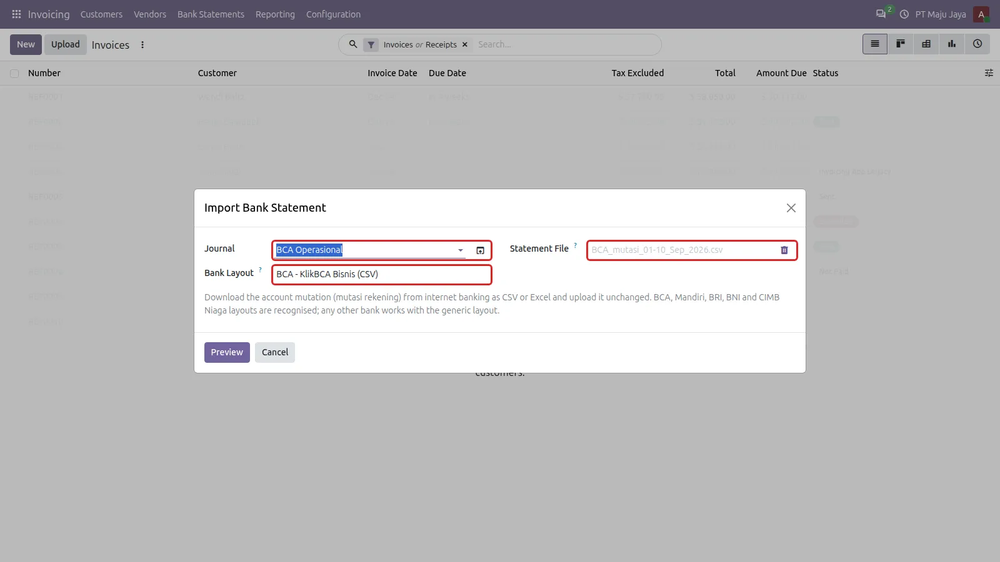
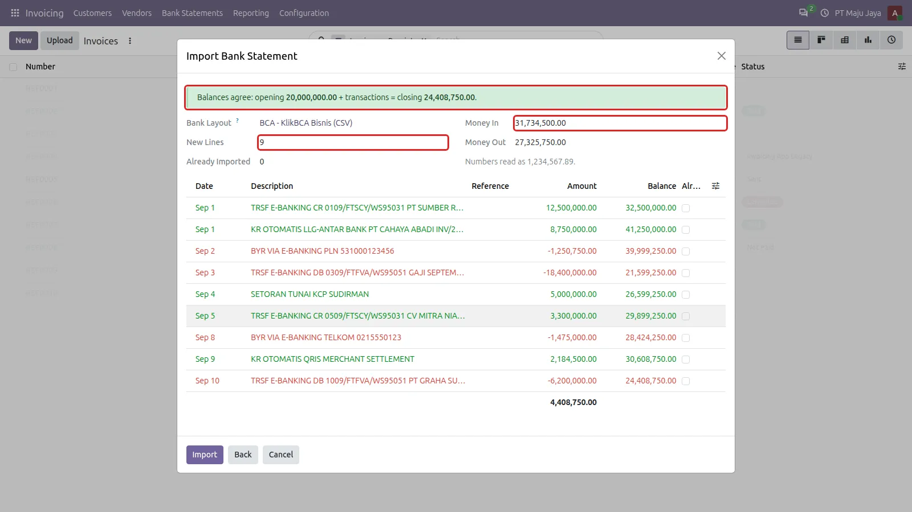
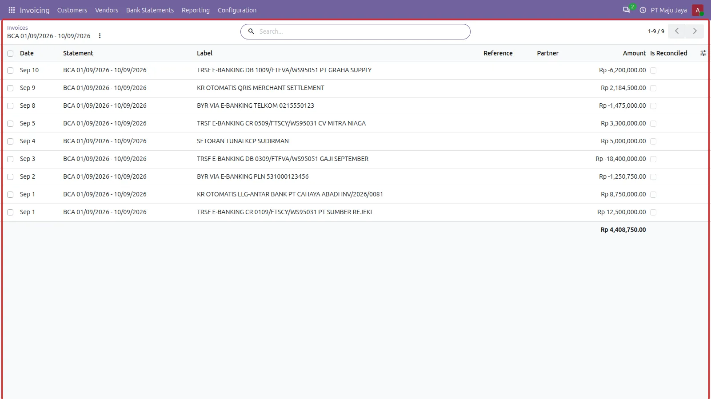
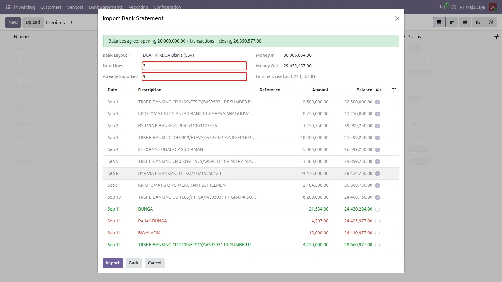
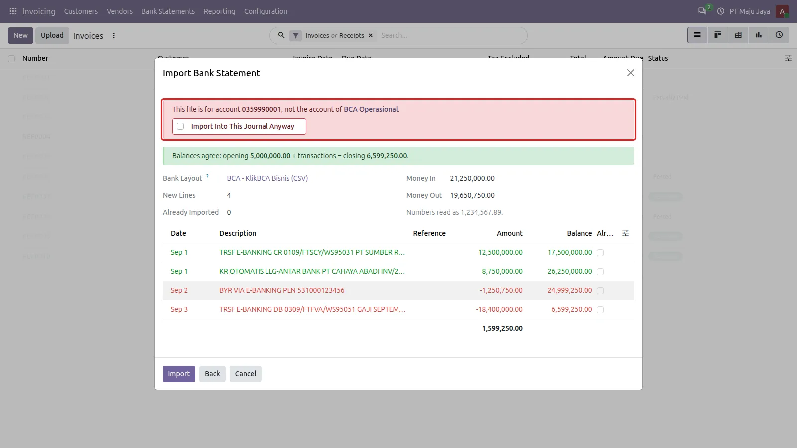
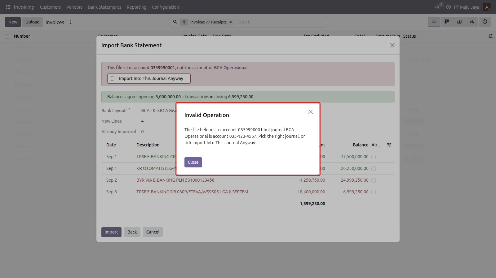
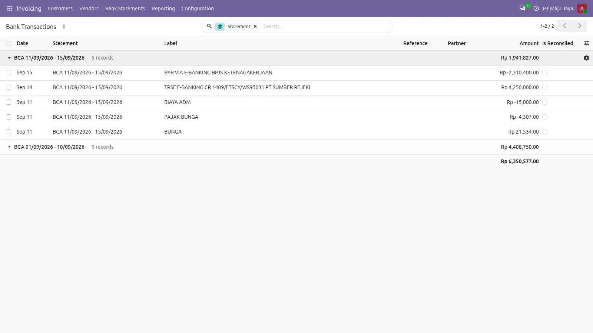
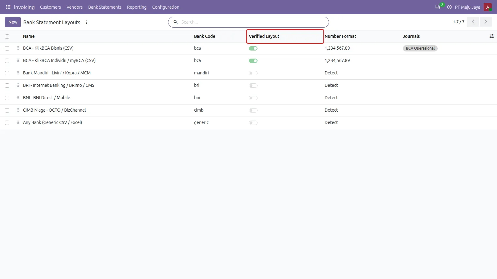
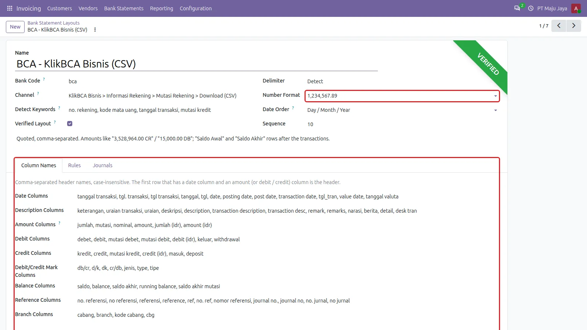
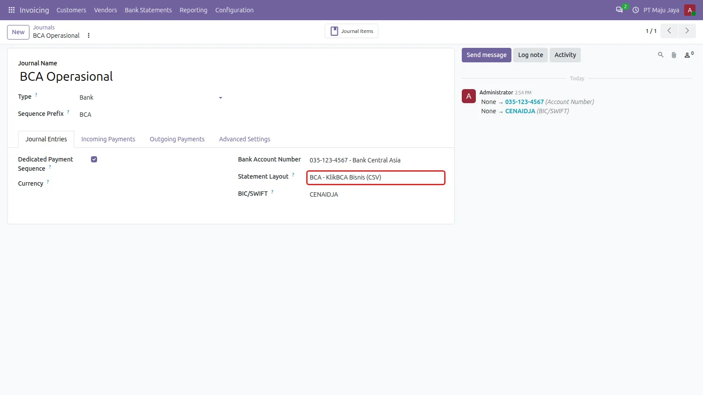

Bank Statement Import Indonesia - BCA, Mandiri, BRI, BNI
Bank statement import for Indonesian banks (BCA, Mandiri, BRI, BNI, CIMB Niaga): layout detected, Indonesian numbers and dates read, duplicates skipped.
- Price
- $39
- Odoo versions
- 17.0
- 18.0
- 19.0
- 20.0
- Technical name
tamadoo_bank_statement_import_id- License
- OPL-1

Video
Screen recording in Odoo 20.0 with demo data, no sound. Also on YouTube.
Text and screenshots below are from the Odoo 20.0 version of this module.
Upload the mutasi rekening of BCA, Mandiri, BRI, BNI or CIMB Niaga exactly as internet banking gives it. The layout is detected, Indonesian numbers and dates are understood, lines already imported are skipped and the balances are checked before anything is written.
Upload, check, import


What you get
Indonesian banks out of the box
BCA KlikBCA Bisnis and Individu (verified against real exports), Mandiri, BRI, BNI, CIMB Niaga, plus a generic layout for any other bank.
Layout detected from the file
No column mapping: the header row, delimiter (comma, semicolon, tab), encoding (UTF-8, UTF-16, Windows) and bank are found automatically.
Indonesian numbers and dates
1.234.567,89 and 1,234,567.89, CR / DB suffixes or columns, debit / credit columns, 01 Agu 2026, Excel dates.
No double imports
Every line gets a fingerprint. Re-import an overlapping period and only the new lines go in.
Balance check
Opening balance + transactions = closing balance is checked in the preview, so an incomplete file is caught.
Right account only
A file for another account number than the journal's is stopped, unless you explicitly confirm.
Editable layouts
Each bank layout is a record: column names, number format, skip rules. A bank changes its export? Adjust it, no code change.
CSV, XLSX and XLS
Upload the file as it comes. The statement is created in the bank journal, ready for reconciliation.
Step by step
Upload
Invoicing → Bank Statements → Import Statement. Pick the bank journal and upload the file. The layout comes from the journal, or is detected from the file.

Preview before anything is written
Bank layout recognised, number format, new lines, money in and out, and the balance check: opening + transactions = closing.

Imported as a bank statement
One statement per file, named after the journal and the period, with the opening and closing balance from the file.

Overlapping periods are safe
Import 1-15 September after 1-10 September: the 9 lines already imported are greyed out and skipped, only the 5 new ones go in.

Wrong account? Stopped
The account number in the file does not match the journal's bank account: the preview says so.

Nothing imported by mistake
Import is refused until you pick the right journal or tick Import Into This Journal Anyway.

Bank transactions
All imported lines in one list: group by statement or bank, filter money in / out or not reconciled.

Bank layouts
One record per bank export. Verified layouts were checked against a real export of that bank.

Adjust a layout without code
Column names, delimiter, number format, date order, keywords used for detection, and lines to skip (opening balance, totals).

A layout per journal
Set the layout on the bank journal to skip detection for that bank.

Set up in 2 minutes
- Install the module (depends on account only, Community or Enterprise).
- Optional: on each bank journal set the Bank Account (to check the account number of the file) and the Statement Layout.
- Invoicing → Bank Statements → Import Statement: choose the journal, upload, Preview, Import.
- A file is not recognised? Configuration → Bank Statement Layouts: add its column names to the bank's layout.
Odoo Community has no bank reconciliation screen since 17.0: imported lines are reconciled with Enterprise Accounting or the OCA account_reconcile_oca module. openpyxl (XLSX) is part of the Odoo requirements; xlrd is only needed for old .xls files.
Get Bank Statement Import Indonesia
Questions before buying? Write to tama.odoo@gmail.com.